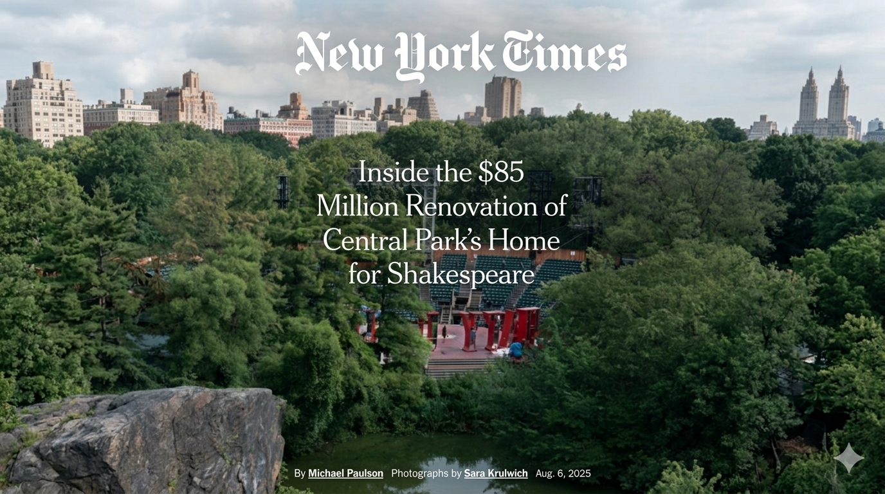
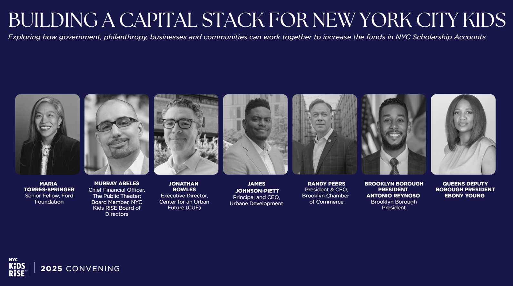
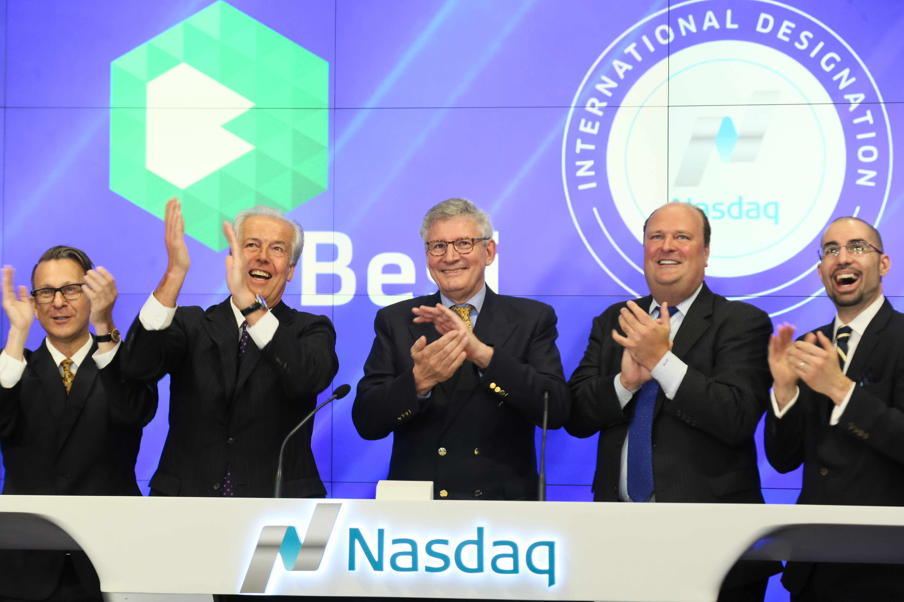

Murray Abeles serves as Chief Financial Officer of The Public Theater, an iconic cultural institution dedicated to continuing the visionary work of its founder, Joe Papp. Founded over sixty years ago, the Public Theater operates on the principles that theater is an essential cultural force and that art and culture belong to everyone. As CFO, Murray creates the conditions for this work to thrive, stewarding the financial strategies that sustain The Public's commitment to radical inclusivity and social impact, while leading the institution's adoption of AI and modern financial systems.
In 2025, he oversaw the $85 million renovation of the Delacorte Theater in Central Park — the outdoor home of Shakespeare in the Park — expanding accessibility and preserving a beloved New York institution. The renovated venue was inaugurated that summer with a landmark production of Twelfth Night starring Lupita Nyong'o, later broadcast nationally on PBS.

Prior to joining The Public Theater, Murray served as Founding Chief of Administration and Finance of NYC Kids RISE, a non-profit dedicated to closing the racial wealth gap. There, he helped build the infrastructure for the Save for College Program, a universal platform providing real financial assets to families regardless of immigration status, and led its operational scaling from a local pilot in Queens to a citywide initiative reaching every public school kindergartner in New York.
Murray continues to serve the organization as Treasurer of its Board. In 2026, New York City committed $53 million to expand the program tenfold, providing a $1,000 college savings account for every public school kindergartner in the city — a historic investment in universal asset-building. To date, families and communities across the five boroughs have amassed more than $80 million toward their children's futures.

Earlier in his career, Murray held the position of Senior Associate at Franco Financial Group, a boutique investment banking and financial advisory firm. There, he provided transactional and strategic consulting services to public, private, and non-profit companies in North America and Europe, and served as Chief Compliance Officer and Portfolio Manager for the firm's Wealth Management division.

He holds a B.A. in Religious Studies with minors in Computer Science and Political Science from New York University, where he was a Martin Luther King, Jr. Scholar. Named one of Crain's New York's Notable Hispanic Leaders, Murray has also received NYU's MLK Scholars Alumni Impact Award and Madame C.J. Walker Award for Entrepreneurial Activity. A former Shafik Gabr Foundation Fellow, he serves as Treasurer of NYC Kids RISE and on the boards of Nonprofit New York and Because Baseball — an organization that created Egypt's first youth baseball league, promoting cultural understanding between the United States and the Middle East through sport.